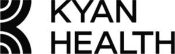

Trade Mark Journal No.2025/041 10 October 2025
WO0000001877286 (9,35,41,44)
Office of origin: Switzerland
Date of International Registration:22 April 2025
Date of designation in the UK:
22 April 2025

International priority date claimed: 22 October 2024
(Switzerland)
(828358)
- Class 9
- Computer software and applications; computer hardware and software for loading, recording, downloading and synchronizing data (text and image files) in data banks; computer software and applications for measuring, recording, monitoring and evaluating data on the mental state of personnel; computer software and applications for creating and maintaining electronic records of personnel and patients; computer software and applications for the transmission and use of coaching and therapy offers in the field of health; computer software and applications for the transmission and use of coaching and therapy offers for the care, monitoring and improvement of mental state.
- Class 35
- Human resources advice; providing advisory and information services relating to personnel management; providing advisory and information services relating to business management and corporate administration; preparation services for commercial transactions for the benefit of third parties; services for connecting persons, namely workers and therapists, online or via the Internet; career planning.
- Class 41
- Training and continuous training; coaching; fitness and health training; hosting workshops and seminars in the field of health training and preventive healthcare; training and further training for personnel management; training and further training in the field of corporate and personnel management; services for maintaining and improving physical and mental state (sports and mental fitness), namely fitness and health training; providing information in the field of mental training; providing information on fitness and health training as well as mental training via an online platform (computer application).
- Class 44
- Advice with respect to health; health care; psychological support, advisory and therapy services; services for monitoring, maintaining and improving mental health (mental training); psychological support, advice and therapy for personnel; psychological diagnosis services; providing support, advisory and therapy services; compilation of psychological profiles.
Kyan Health AG
Representative: PRINS Intellectual Property AG, Postfach 1739, CH-8027 Zürich, SWITZERLAND